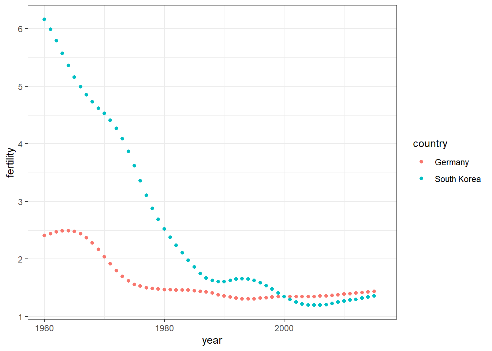

library(tidyverse)
library(dslabs)
ds_theme_set()Week 3: Data Wrangling
The datasets used in this course have been made available to you as R objects, specifically as data frames. The US murders data, the reported heights data, the Gapminder data, and the poll data are all examples. These datasets come included in the dslabs package and we can load them using the the data function. Furthermore, we have made the data available in what is referred to as tidy form, a concept we define later in this lecture. The tidyverse packages and functions assume that the data is tidy and this assumption is a big part of the reason these packages work so well together.
However, very rarely in a data science project is data easily available as part of a package. We did quite a bit of work “behind the scenes” to get the original raw data into the tidy tables you will work with. Much more typical is for the data to be in a file, a database, or extracted from a document including web pages, tweets, or PDFs. In these cases, the first step is to import the data into R and, when using the tidyverse, tidy the data. The second step in the data analysis process usually involves several, often complicated, steps to covert data from its raw form to the tidy form that greatly facilitates the rest of the analysis. We refer to this process as data wrangling.
Here we cover several common steps of the data wrangling process including importing data into R from files, tidying data, string processing, html parsing, working with dates and times, and text mining. Rarely are all these wrangling steps necessary in a single analysis, but data scientists will likely face them all at some point. Some of the examples we use to demonstrate data wrangling techniques are based on the work we did to convert raw data into the the tidy datasets provided by the dslabs package and use in the course as examples.
Tidy data
To help define tidy data we will use the Gapminder data from the dslabs package that contains the health and income outcomes for 184 countries from 1960 to 2016. This dataset comes from the Gapminder Foundation, an organization dedicated to educating the public by using data to dispel common myths about the so-called “developing world”. The organization uses data to show how actual trends in health and economics contradict the narratives that emanate from sensationalist media coverage of catastrophes, tragedies and other unfortunate events. We’ll dig more into the data in the visualization module, but for now let’s plot fertility data across time for two countries: South Korea and Germany. To make the plot we use this subset of the data:
How to use the %in% operator in R. This operator will check two vectors to see if there are any overlapping numbers
# sequence of numbers 1:
a <- seq(1,5)
a[1] 1 2 3 4 5# sequence of numbers 2:
b <- seq(3,12)
b [1] 3 4 5 6 7 8 9 10 11 12Using the %in% operator to check matching values in our sets
a %in% b[1] FALSE FALSE TRUE TRUE TRUEdata("gapminder")
tidy_data <- gapminder %>% filter(country %in% c("South Korea", "Germany")) %>% select(country, year, fertility)
head(tidy_data) country year fertility
1 Germany 1960 2.41
2 South Korea 1960 6.16
3 Germany 1961 2.44
4 South Korea 1961 5.99
5 Germany 1962 2.47
6 South Korea 1962 5.79With the data in this format we could quickly make the desired plot:
tidy_data %>% ggplot(aes(year,fertility,color = country)) + geom_point()
One reason this code works seamlessly is because the data is tidy: each point is represented in a row. This brings us to the definition of tidy data: each row represents one observation and the columns represent the different variables that we have data on for those observations.
If we go back to the original data provided by GapMinder we see that it does not start out tidy. We include an example file with the data shown in this graph mimicking the way it was originally saved in a spreadsheet:
The object wide_data includes the same information as the object tidy_data except it is in a different format: a wide format. Here are the first nine columns:
#wide_data <- read_csv('fertility-two-countries-example.csv')
#select(wide_data, country, '1960':'1967')There are two important differences between the wide and tidy formats. First, in the wide format, each row includes several observations. Second, one of the variables, year, is stored in the header.